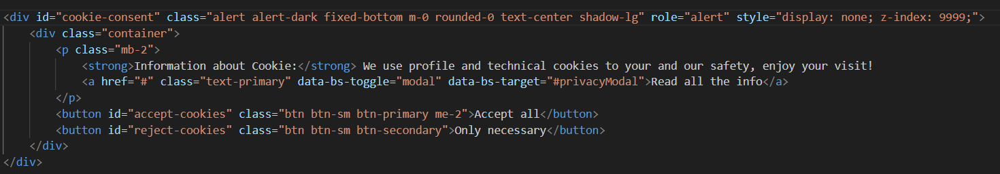
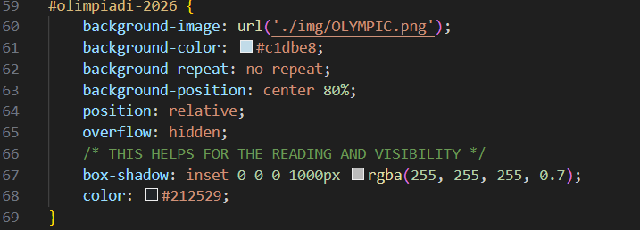
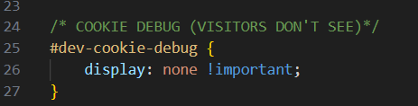
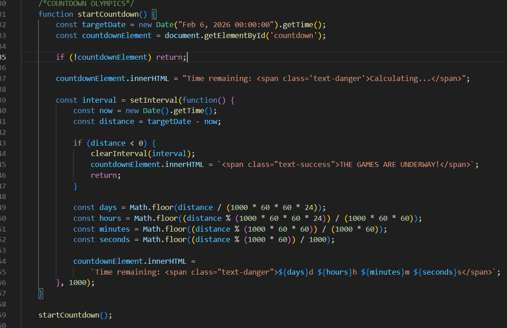
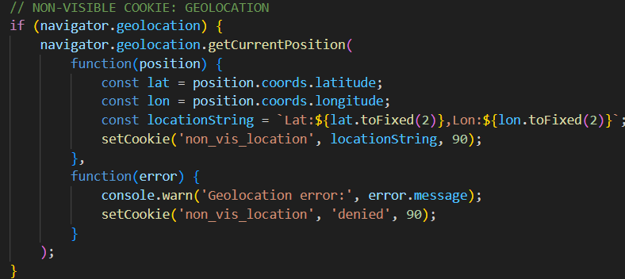
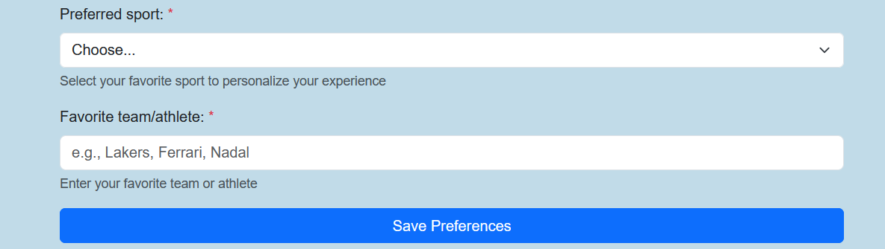

THE ULTIMATE SPORT HUB
⚽ The Web Site

What is TotalSportPlus?
TotalSportPlus A complete Hub that joins:
- 📰 Sports news with interactive carousels
- 👥 Fidelity community in which you can choose your preferences
- 🏅 Countdown live and special focus on Milano Cortina 2026
- 🛒 Shop integrated to be always at the top
- 🍪 Cookie Management & Consent
Goal of TotalSportPlus:
To aggregate the latest news, increase community interaction, and offer e-commerce integration for sports gear.

The base idea of the WebSite
The site addresses the need for a unified and personalized sports experience.
- Problem: Sports’ information is often fragmented and incomplete.
- Solution: TotalSportPlus brings all you need in a single, practical and easy to use interface.
- Tech aspects: Emphasizes modern web development practices, including responsive design (Bootstrap) and robust client-side cookie management (JavaScript).
💡 Inspirations and Design
Design and functionality are inspired by modern sports hub and news portals. Such as:
Sources of Inspiration


💻 Technical Elements: Code Breakdown
Now we take a brief look at the core technical components used to create the TotalSportPlus website.
1.
index.html (Structure and Content) 🔧
- Key Sections:
#hero-image: The initial welcome screen to attract the user.#sportsCarousel: helps the user to folllow the latest news with a click.#community: Contains the user preference form and two Visible Cookies (pref_sport,fav_team).#olimpiadi-2026: Dedicated section for the countdown timer and the official site.
1.
index.html (Structure and Content) 🔧
- Cookie Consent Banner: Essential for GDPR compliance. 
- Framework: Utilizes Bootstrap 5.3 for responsive layout and pre-styled components (Navbar, Carousel, Forms, Buttons).
2.
style.css (Aesthetics and Customization) 🎨
- Custom Styling:
#hero-image::before: A CSS pseudo-element creating a semi-transparent overlay to improve text readability for users.#olimpiadi-2026: Use of particular box shadow and inset for better readability 
2.
style.css (Aesthetics and Customization) 🎨
- Cookie debug: Ensures sensitive debug information is never visible to the end-user. 
- Branding: Use of primary blue
(
#007bff) and light-blue background (#E6F7FF,#c1dbe8) for colors, and ‘Oswald’ font for writing.
3.
script.js (Functionality and Interactivity)
🔒
This file is the core of the site’s dynamic behavior, primarily focused on Cookie Management.
- Olympic Countdown (
startCountdown) 
3.
script.js (Functionality and Interactivity)
🔒
Geolocation Cookie (Non-Visible Tracking)  90 days expiry
Age Cookie (Non-Visible Profiling)
- Saves a random age (18-57 range) to the
non_vis_agecookie (365 days expiry).
- Saves a random age (18-57 range) to the
3.
script.js (Functionality and Interactivity)
🔒
Preference Form (Visible Cookies)  30 days expiry
Consent Banner:
- Uses the
consent_givencookie to show/hide the consent banner, respecting user choice for 1 year.
- Uses the
✅ Goals Achieved
- Multi-section site very intuitive and easy to use
- Modern design and responsive page
- Interactivity thanks to JS
- Complete cookie management and GDPR approved
- All that a sport fan needs it’s here!
⚽ TotalSportPlus
An Alessandro Guirreri’s project
THANK YOU FOR YOUR ATTENTION!